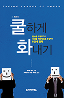
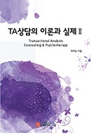

전체 전체 전체

쿨하게 화내기 (제2판) 가족연구소 마음/박의순 옮김 우리는 분노를 적절히 표현하는 것이 서툰 문화에서 살기 때문에 분노 표현을 미성숙한 것으로 여기며 회피하려 한다. 그러나 분노는 사라지지 않는다.
자세히보기

TA상담의 이론과 실제 II 가족연구소 마음/박의순 저 TA(Transactional Analysis)가 한국에 도입된지 오랜 시간이 흘렀지만 번역서나 각종 상담 책의 부분으로만 소개되고 하나의 전문서로 발간됐다.